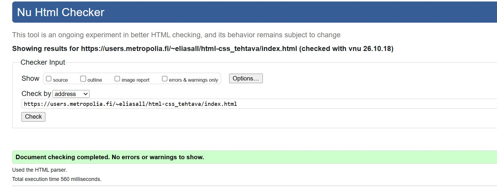
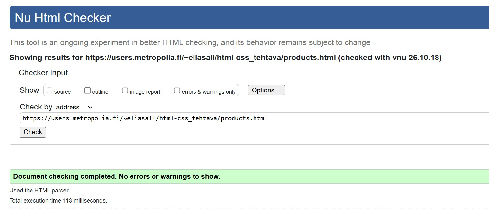
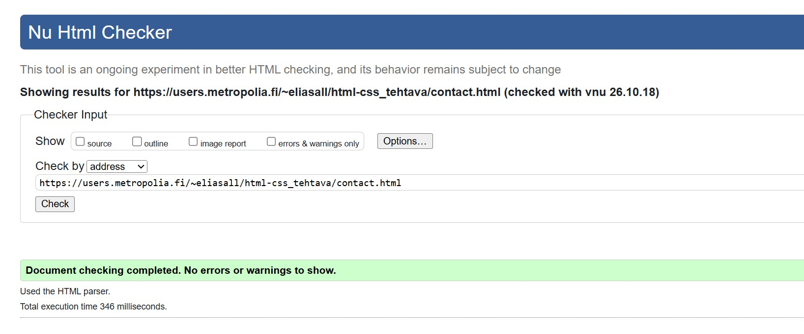
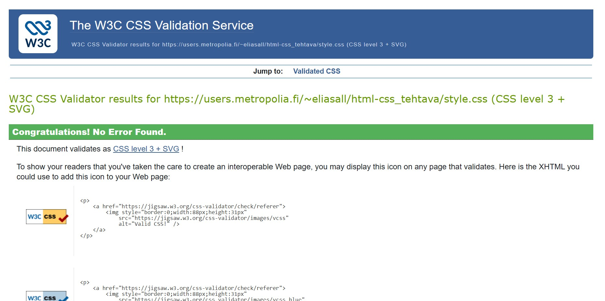
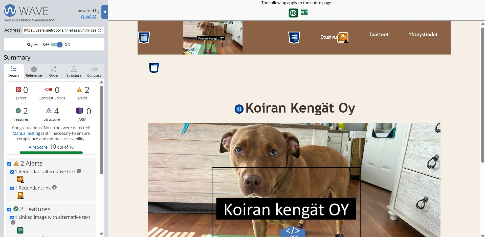
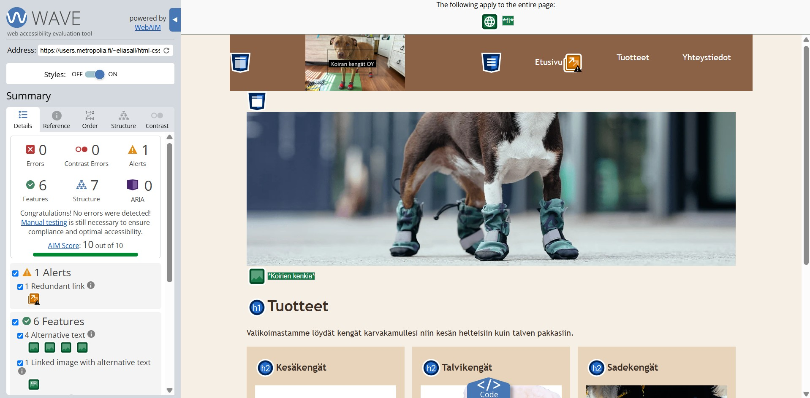
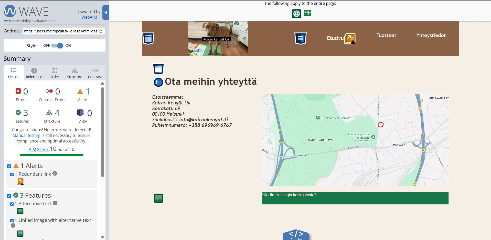

Verkkosivuston tarkistukset
Tällä sivulla esitellään Koiran Kengät Oy:n verkkosivustolle tehdyt HTML-, CSS- ja saavutettavuustarkistukset.
HTML-validointi



CSS-validointi

WAVE-saavutettavuustarkistus



Käytetty fontti
Verkkosivustolla käytetään Trebuchet MS -fonttia. Jos fonttia ei ole saatavilla, käytetään sans-serif-varafonttia.
body {
font-family: "Trebuchet MS", sans-serif;
}